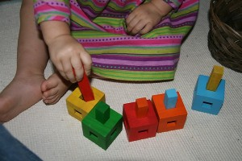
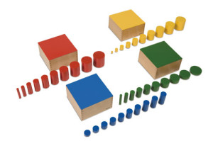

Our Toddler Programs
Toddler Program – 18 months through 3 years
The Montessori Toddler Program provides children 18 months through 3 years old with memorable experiences that promote a feeling of security, comfort, confidence, independence and a sense of accomplishment.
This sensitive period of a child’s life has many physical and emotional needs that can be met in our uniquely prepared toddler environment. Toddlers are gaining control of their physical movements. The child size bathroom helps to encourage easy toilet training.
The environment for the toddlers is very nurturing and calm community as these children are o ften experiencing their first interactions with other children.A qualified Montessori teacher directs each class to offer tenderness, warmth, and patience, which are so essential to development at this age. The space is beautifully designed to appeal to the child’s curiosity. All areas of the classroom are scaled to child size to inspire a child’s curiosity. The Montessori materials in the room continue to change as the child develops emotionally, socially, physically, cognitively, verbally and grows to follow instructions independently.
Toddler Program – 2 years through 3 years
The Montessori Toddler Program provides children 2 years through 3 years old with experiences that support the development of their confidence and independence.
The Montessori Toddler Room design and schedule appeals to a child’s curiosity. The environment for the toddlers is nurturing and calm.
In our toddler classroom, a typical day begins and ends with group circle time and songs. During circle time the teacher discusses various topics with the children, such as the weather, different holidays, cultures and curriculum themes. The children learn grace, courtesy, and respect for one another.
Toddlers and the Montessori Method
Montessori materials and lessons in the Toddler Classroom are categorized under five areas, which are all interrelated:
Practical life
This area has activities that include self-care, care of the environment (indoors and outdoors). Please note, your child will need one pair of shoes indoors and one pair for outdoors. Practical life activities help children gain control of their physical movement. For example: Scissor cutting promotes fine motor skills, pencil holding skills, and hand-eye coordination.
Sensorial
Sensorial materials teach children to classify, sort, colors, size, touch and smell. With some of the Montessori materials the children can see and feel different size objects.
Language
Language lessons consist of songs, rhymes, spoken conversation, written expression, games and many language materials that increase phonetic awareness. One way teachers instruct the child in the sounds of the alphabet is by means of muscular and visual memory with sandpaper letters.
Mathematics
Using concrete materials, children explore the concept of numbers, symbols, sequence in preparation for addition, subtraction, multiplication and division in the decimal system
Cultural
Art expression, music, history, science and geography are all integrated into the program. Weather permitting, our toddler class will go outdoors twice daily. Outside time promotes physical activity, social exchanges, friendships, vocabulary, and scientific observations of nature. There i s an emphasis on the characteristics of the Montessori Program that encourages the importance of a peaceful, respectful, and caring environment whether the teacher works one on one with your child, or during group circle time.